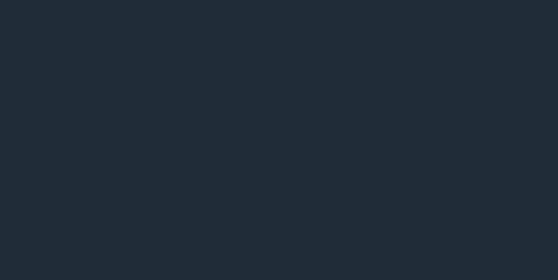

Qu'est-ce qu'un environnement d'apprentissage optimisé ?
Chez BeCode, nous faisons en sorte ne pas être une école comme les autres. Les méthodes d'apprentissages ne sont pas ordinaires, la relation "professeur/élève" étant fortement différente de l'enseignement traditionnel. Concrètement, il s'agit de communiquer énormément et surtout, de collaborer.
Communication
Notre force chez BeCode, est de représenter une entreprise modèle grâce au partage de soi, de nos connaissances et de nos expériences de vies.
Nos différents projets nous poussent à *communiquer* sans arrêt, avec fun et interaction.
La communication consiste à comprendre celui qui écoute (Robert Sabatier)>cit/>
Comment communique-t-on et travaillons-nous chez BeCode ?
La communication est la base de la pédagogie active.
1. La pédagogie active est au centre même de la formation.
- L'apprenti est poussé à trouver par lui-même les solutions aux problèmes rencontrés.
- La pratique est au coeur même de la formation, l'étudiant doit pouvoir comprendre, assimiler et réutiliser ce qu'il a vu.
- Le groupe est poussé à communiquer et à échanger le maximum.
- Via des projets
- Via un auto apprentissage
Quelles sont les valeurs qui sont pronếes au sein de BeCode ?
- L'entraide, le partage
- L'autonomie, aller au fonds des choses
- La confiance en soi
Objectifs
Le but principal de la formation est de devenir Developpeur Web indépendant et qualifié. A côté de cela, des objectifs sont réalisés au quotidien lors des épreuves ou travaux ( individuel ou de groupes ). Par exemple, l'objectif du dépassement de soi et la résolution de problèmes par soi-même.
Suivez nos aventures et progrès en cliquant ici
 

"La vie, c'est comme une bicyclette, il faut avancer pour ne pas perdre l'équilibre", Albert Einsteinq